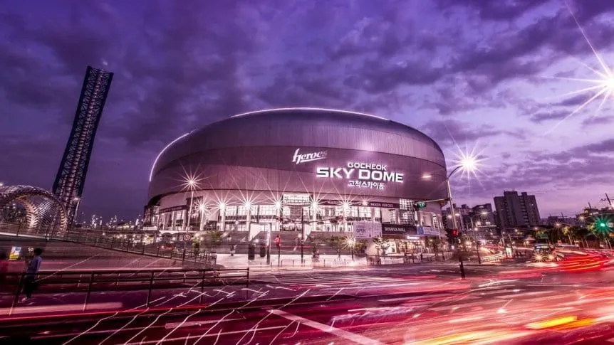
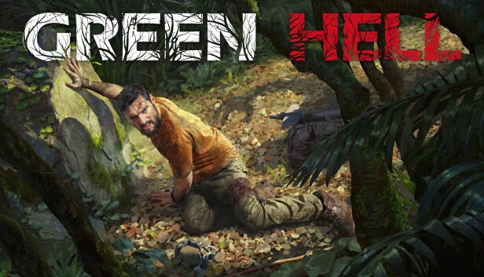

Los playoffs de la LLA comenzaron con sorpresas
Nadie se esperaba un comienzo así en los playoffs del torneo Apertura de la Liga Latinoamérica de League of Legends. Estral e Isurus, los equipos que dominaron con claridad la primera fase y se habían convertido en los candidatos, cayeron sorpresivamente ante Six Karma y Rainbow7.
más información aqui

Worlds 2023
Anunciadas las sedes y fechas del Mundial de League of Legends
Apocos días del comienzo del Mid Season Invitational en Londres, Riot Games sorprendió a los fanáticos de League of Legends con el anuncio de las sedes y las fechas de cada instancia de Worlds 2023, el Mundial de la especialidad. Se jugará en Corea del Sur, desde octubre.
Será el tercer mundial en tierras surcoreanas, un país que respira el MOBA como pocos y tiene una riquísima historia de enormes jugadores y campeones. Se pondrá en marcha el 10 de octubre y culminará el 19 de noviembre, con cuatro estadios diferentes.
- Play-Ins: del 10 al 15 de octubre en LoL Park de Seúl.
- Suizo: del 19 al 23 y del 26 al 29 de octubre en la Sala KBS, en Seúl.
- >Cuartos y semis: del 2 al 5 de noviembre y del 11 al 12 de noviembre, en el Sajik Indoor Gymnasium de Busán.
- Final: el 19 de noviembre en el Gocheok Sky Dome de Seúl, el estadio techado más grande del país.
más información aqui

El juegazo de SUPERVIVENCIA que tiene descuento y es TENDENCIA en Steam
Este impresionante título tiene lugar en la selva y te pondrá frente a grandes peligros, mientras buscas alimentos y construyes tu nuevo hogar.
Green Hell es un durísimo simulador de supervivencia en mundo abierto que se desarrolla en la inexplorada selva amazónica. El jugador comienza su historia solo en la selva, sin comida ni equipo, intentando sobrevivir y encontrar una forma de escapar. Aferrándose a la vida, el jugador se embarca en un viaje de resistencia.
Equipado únicamente con sus propias manos, el jugador deberá aprender técnicas de supervivencia reales para construir refugios, hacer herramientas y fabricar armas para cazar y defenderse. La amenaza permanente de la selva, los animales salvajes y las enfermedades tropicales son algunos de los desafíos que deberán enfrentar.
más información aqui
